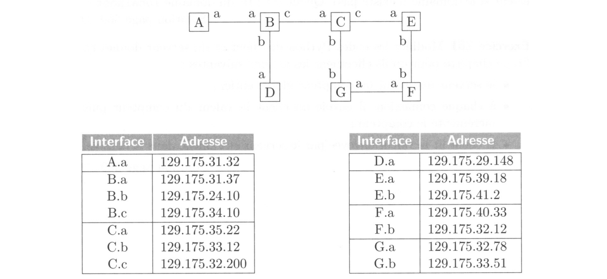

Les Réseaux
Histoire des réseaux de communication
Les tours génoises
Au XVIᵉ siècle, sur les côtes méditerranéennes (notamment en Corse), on érigeait de grandes tours de pierre : les tours génoises. Leur rôle n’était pas décoratif, mais stratégique. Elles servaient à prévenir les attaques de pirates.
Les guetteurs, postés au sommet, communiquaient entre tours grâce à des signaux visuels : de la fumée le jour, du feu la nuit. Ainsi, un message pouvait parcourir des dizaines de kilomètres en quelques minutes. C’était déjà une forme de réseau de communication.
Mais ce réseau avait ses limites : il ne fonctionnait que si la visibilité était bonne et nécessitait une vigilance permanente. La communication restait donc lente, ponctuelle et tributaire de la météo.

Les sémaphores et le télégraphe optique
Deux siècles plus tard, en pleine Révolution française, un ingénieur nommé Claude Chappe imagine un système plus fiable : le télégraphe optique, ou sémaphore. Chaque tour est équipée d’un grand mât muni de bras articulés. Selon leur position, ils forment des lettres ou des symboles que les opérateurs lisent à la longue-vue avant de les reproduire sur la tour suivante.
En 1794, Chappe parvient à transmettre un message de Paris à Lille en quelques minutes : une prouesse pour l’époque. La France se couvre alors d’un vaste réseau de tours, véritables ancêtres des relais de communication modernes.
Mais le système reste dépendant du jour et du beau temps.

Le télégraphe électrique
Au milieu du XIXᵉ siècle, une révolution se prépare : l’électricité entre en scène. L’Américain Samuel Morse met au point un télégraphe capable d’envoyer des impulsions électriques à travers un fil métallique. Chaque impulsion correspond à un point ou un trait : c’est le code Morse. Grâce à lui, les messages peuvent être transmis en temps réel sur des centaines de kilomètres. En 1858, le premier câble transatlantique relie l’Europe à l’Amérique. Le monde commence à se rétrécir.

Le téléphone
En 1876, Alexander Graham Bell dépose le brevet du téléphone. Pour la première fois, la voix humaine traverse les fils électriques. Les signaux ne sont plus codés : ils deviennent sonores.
Le téléphone change la société. Les distances s’effacent, les conversations deviennent immédiates, les relations commerciales s’accélèrent. C’est le premier véritable réseau mondial de communication interpersonnelle, celui des lignes téléphoniques.

ARPANET
En 1969, au cœur de la guerre froide, les États-Unis cherchent un moyen de relier leurs ordinateurs pour échanger des informations même en cas d’attaque. La DARPA, agence du ministère de la Défense, crée ARPANET.
Ce réseau relie quatre universités américaines : UCLA, Stanford, Santa Barbara et Utah. Les chercheurs y testent une idée nouvelle : la commutation de paquets, qui consiste à découper les données en petits morceaux indépendants. Ce principe, toujours utilisé aujourd’hui, est à la base d’Internet.
Le premier message envoyé devait être « LOGIN »… mais le système s’est arrêté après deux lettres. Le premier mot d’Internet fut donc simplement “LO” .

Le Minitel
Dans les années 1980, la France développe son propre réseau numérique : le Minitel. C’est un petit terminal branché sur la ligne téléphonique qui permet d’accéder à des services en ligne : annuaires, messageries, réservations, banques, petites annonces…
Bien avant Internet, le Minitel met des millions de Français en contact avec le monde numérique. C’est un précurseur du Web, avec son interface textuelle et son système d’adresses, comme le fameux « 3615 ».

Internet
Dans les années 1990, ARPANET devient Internet, un vaste ensemble de réseaux interconnectés à l’échelle planétaire. Internet repose sur le modéle TCP/IP, qui permet à toutes les machines du monde de parler le même langage.
Mais Internet n’est qu’une infrastructure. En 1989, Tim Berners-Lee, au CERN, invente le World Wide Web, un système qui permet de naviguer entre des documents reliés par des liens hypertextes. Grâce au Web et aux navigateurs comme Mosaic, Netscape ou plus tard Chrome, les informations deviennent accessibles à tous, en quelques clics.
Le Web transforme Internet en un espace universel de partage, de savoir et de communication.
Internet n’est pas une seule machine géante.
C’est en réalité un immense ensemble de réseaux interconnectés :
LAN
Les réseaux locaux (LAN, Local Area Network)
- Exemple : votre maison (box Internet + ordinateurs + téléphones connectés en Wi-Fi ou en câble).
- Exemple : le réseau du lycée (salles informatiques, imprimantes, serveurs pédagogiques).
- Exemple : le réseau d’une entreprise.
Ces réseaux sont privés et limités dans l’espace (on les appelle des réseaux locaux).

Les principaux composants d’un LAN incluent :
- le switch, qui permet de connecter plusieurs ordinateurs entre eux et de gérer le trafic interne du réseau
- le routeur, qui relie le LAN à d’autres réseaux, comme Internet
- les câbles Ethernet assurent une connexion filaire fiable entre les appareils
- le Wi-Fi permet aux appareils sans fil de se connecter au réseau
Les Fournisseurs d’Accès à Internet (FAI)
Pour communiquer avec le reste du monde, un réseau local doit se connecter à un Fournisseur d’Accès à Internet (FAI) :
- En France : Orange, SFR, Free, Bouygues, etc.
- Dans d’autres pays : AT&T, Deutsche Telekom, etc.
Un FAI gère un réseau beaucoup plus vaste qui relie des millions de clients.
L’interconnexion mondiale
- Les réseaux des FAI sont eux-mêmes reliés entre eux par de très grandes lignes de communication (fibre optique, câbles sous-marins, satellites).
- Les grandes entreprises (Google, Amazon, Microsoft, etc.) possèdent aussi leurs propres réseaux qui s’interconnectent avec les FAI.
Résultat :
Quand vous envoyez un message, il sort d’abord de votre réseau local → passe par le réseau de votre FAI → traverse plusieurs autres réseaux → atteint le réseau du destinataire.
Idée clé à retenir :
Internet, c’est l’interconnexion de milliers de réseaux locaux et de fournisseurs d’accès à l’échelle mondiale, qui communiquent tous grâce à des protocoles communs.
Conclusion
En quelques siècles, l’humanité est passée des signaux de fumée aux flux d’informations mondiaux.
Chaque invention a rapproché les hommes, accéléré les échanges et repoussé les frontières de la communication.
Modèle en couches TCP/IP
La communication sur un réseau se fait grâce à des protocoles, qui sont des règles définissant comment les données sont envoyées, reçues et comprises par les machines.
Le modéle TCP/IP organise la communication en 4 couches, chacune ayant un rôle spécifique et ses protocoles.
Quand on envoie un message ou un fichier sur Internet, il n’est jamais envoyé en un seul bloc, mais découpé en petits morceaux appelés paquets.

Chaque couche y ajoute des informations spécifiques (adresse de destination, numéro du paquet, etc) avant de transmettre les données, c'est l'encapsulation.
À la réception, chaque couche retire son en-tête pour reconstituer les données originales c’est la désencapsulation.

Les protocoles MAC et IP : l’adressage
Chaque appareil connecté à Internet doit être identifiable de manière unique.
Pour cela, deux types d’adresses existent :
Adresse MAC (adressage local)
Chaque appareil connecté à un réseau possède une carte réseau (ou interface réseau), qui permet d'envoyer et de recevoir des données. Chaque carte réseau possède une adresse MAC (Media Access Control), un identifiant unique attribué par le fabricant.
Un PC peut posséder plusieurs cartes réseau, par exemple une pour le câble Ethernet et une autre pour le Wi-Fi. Chaque carte a sa propre adresse MAC, ce qui signifie qu’un même ordinateur peut être identifié différemment selon le type de connexion utilisée.
L'adresse MAC est composée de 12 chiffres hexadécimaux, souvent notés sous la forme 00:1A:2B:3C:4D:5E. Elle permet d’identifier de manière unique chaque carte réseau sur un réseau local, un peu comme une plaque d'immatriculation pour une voiture.
Contrairement à l'adresse IP, qui peut changer selon le réseau, l'adresse MAC reste fixe et unique pour chaque carte réseau. Les switches utilisent ces adresses MAC pour diriger les données vers le bon appareil sur le réseau local.
Exercices
1. Combien d'adresses MAC possibles existe-t'il ?
2. Écrire 5 exemples d'adresses MAC différentes.
Adresse IP (adressage global)
Chaque appareil connecté à un réseau possède une adresse IP (Internet Protocol), qui sert à l’identifier et à échanger des données avec d’autres appareils. Contrairement à l’adresse MAC, qui est fixe et unique pour chaque carte réseau, l’adresse IP peut changer selon le réseau auquel l’appareil est connecté.
Structure d’une adresse IP
Une adresse IP version 4 est composée de 4 nombres entre 0 et 255, séparés par des points, par exemple 192.168.1.10. Elle se divise en deux parties :
- La partie réseau : identifie le réseau auquel appartient l’appareil.
- La partie hôte : identifie l’appareil sur ce réseau.
Le masque de sous-réseau (subnet mask) sert à déterminer quelles parties de l’adresse IP correspondent au réseau et lesquelles correspondent à l’hôte. Par exemple, avec une adresse IP 192.168.1.10 et un masque 255.255.255.0 :
- Le réseau est
192.168.1.0 - L’hôte est
10
La Notation CIDR (Classless Inter-Domain Routing)
Elle permet de représenter le réseau plus simplement. On écrit l’adresse suivie d’un slash et du nombre de bits utilisés pour la partie réseau.
Par exemple :
192.168.1.10/24
Le /24 signifie que les 24 premiers bits de l’adresse correspondent le réseau (soit 255.255.255.0)
et les 8 bits restants correspondent à l’hôte.
adresse en binaire : 11000000.10101000.00000001.00001010
masque (24 bits ici) : 11111111.11111111.11111111.00000000
donc la partie réseau est : 11000000.10101000.00000001.00000000
Il s'agit de l'adresse du réseau.
Exercices
1) Combien d'adresses IP possibles existe-t'il ?
2) Écrire 5 exemples d'adresses IP différentes.
3) Identifier le réseau et l’hôte
Pour chaque adresse IP donnée, indique la partie réseau et la partie hôte en utilisant le masque fourni.
-
Adresse :
192.168.1.25
Masque :255.255.255.0 -
Adresse :
10.0.5.12
Masque :255.255.0.0 -
Adresse :
172.16.7.34
Masque :255.255.255.240
4) Déterminer si deux adresses sont sur le même réseau
Indique si les adresses suivantes appartiennent au même réseau. Justifie ta réponse. Si oui, donner 3 autres adresses possibles sur ce réseau.
192.168.1.10/24et192.168.1.200/2410.1.5.7/16et10.2.3.10/16172.16.5.20/28et172.16.5.25/28
5) Conversion en binaire
Convertis les adresses IP suivantes et leurs masques en binaire. Puis identifie la partie réseau et la partie hôte.
192.168.10.14/2410.0.20.5/8172.16.100.50/16
6) Calculer le nombre d’hôtes
Pour chaque réseau, calcule le nombre maximum d’hôtes possibles et indiquez la plage complète d’adresses.
- Réseau :
192.168.1.0/24 - Réseau :
10.0.0.0/16 - Réseau :
172.16.5.0/28
7) Identifier le masque
Pour chaque situation, propose le masque le plus approprié en notation CIDR pour le réseau.
- Un réseau doit contenir 50 hôtes maximum.
- Un réseau doit contenir 500 hôtes maximum.
- Un réseau doit contenir 12 hôtes maximum.
8) IP et sous-réseaux
Une entreprise possède le réseau 192.168.0.0/24. Elle veut créer 4 sous-réseaux égaux.
- Quelle sera la nouvelle notation CIDR pour chaque sous-réseau ?
- Donne l’adresse réseau de chaque sous-réseau.
- Indique le nombre d’hôtes possibles dans chaque sous-réseau.
IPv6
Les adresses IP que nous avons utilisé jusque là correspondent au format IPv4. Utilisé depuis les débuts d’Internet, il ne permet pas d'avoir assez d'adresses pour palier à nos besoins actuels : avec la multiplication des ordinateurs, smartphones, objets connectés, consoles et serveurs, ce nombre est devenu insuffisant.
Pour répondre à ce problème, une nouvelle version du protocole Internet a été créée : IPv6.
exemple d'adresse IPv6 : 2001:0db8:85a3:0000:0000:8a2e:0370:7334
Pour simplifier, on peut abréger une adresse IPv6 :
- Les zéros initiaux d’un groupe peuvent être supprimés :
2001:db8:85a3:0:0:8a2e:370:7334
- Une suite de groupes 0000 peut être remplacée par :: (une seule fois par adresse) :
2001:db8:85a3::8a2e:370:7334
Exercices
1. Combien d'adresses IPv6 possibles existe-t'il ?
2. Écrire 5 exemples d'adresses IPv6 différentes.
3. Abrégez les adresses suivantes selon les règles IPv6 :
- 2001:0db8:0000:0000:0000:0000:0000:0001
- fe80:0000:0000:0000:0202:b3ff:fe1e:8329
- 2001:0db8:85a3:0000:0000:8a2e:0370:7334
- 2001:0000:0000:0000:0000:0000:0000:0000
- 0000:0000:0000:0000:0000:0000:0000:0001
4. Faites l’opération inverse :
Développez complètement les adresses abrégées suivantes (ajoutez tous les zéros manquants) :
- 2001:db8::1
- fe80::202:b3ff:fe1e:8329
- ::1
- 2001:db8:85a3::8a2e:370:7334
- ::
DNS – Domain Name System
Quand vous tapez un nom de site dans votre navigateur, par exemple wikipedia.org, votre ordinateur ne sait pas directement où envoyer les paquets de données.
En réalité, les ordinateurs communiquent entre eux uniquement grâce à leurs adresses IP.
Mais comme il serait impossible de retenir toutes ces adresses, on utilise un système plus pratique : le DNS. Il s'agit d'un service qui fait la correspondance entre un nom de domaine et son adresse IP.
Le DNS fonctionne comme un annuaire d’Internet :
On cherche un nom, il nous donne l’adresse numérique correspondante.
Exemple :
wikipedia.org → 185.15.59.224
google.fr → 142.250.179.3
- On tape
wikipedia.orgdans le navigateur. - Notre ordinateur demande à un serveur DNS quelle est l’adresse IP de ce site.
- Le serveur DNS répond avec l’adresse correspondante.
- Notre ordinateur peut alors se connecter directement à cette adresse IP.
Les serveurs DNS
Le système DNS n’est pas un seul gros ordinateur magique qui connaît toutes les adresses du monde.
C’est un réseau mondial de milliers de serveurs répartis sur toute la planète, organisés de manière hiérarchique et coopérative.
Grâce à ce système, la résolution d’un nom (comme
wikipedia.org) se fait très rapidement, souvent en quelques millisecondes.
Ce système permet de :
- simplifier la vie des utilisateurs : il est plus facile de retenir lycee.fr que 193.54.12.45.
- pouvoir changer l’adresse IP d’un site sans changer son nom (pratique quand un site change de serveur).
- accélérer la navigation grâce au cache des serveurs DNS locaux.
Les protocoles UDP et TCP : le transport
Pour que les données circulent sur Internet, il faut plus qu'une adresse IP :
il faut aussi savoir comment les envoyer et les remettre dans le bon ordre.
C’est le rôle des protocoles de transport, principalement TCP et UDP.
Le protocole UDP (User Datagram Protocol)
UDP est beaucoup plus rapide, mais non fiable.
Il envoie les paquets sans vérifier qu’ils sont bien reçus ni dans le bon ordre.
C’est un peu comme envoyer plusieurs lettres sans accusé de réception : certaines peuvent se perdre, mais le message global passe plus vite.

Utilisations typiques :
- Streaming vidéo ou audio (YouTube, Spotify)
- Jeux en ligne
- Appels vocaux (Visioconférence)
Le protocole TCP (Transmission Control Protocol)
TCP est un protocole fiable.
Avant d’envoyer les données, l’expéditeur et le destinataire doivent d’abord s’assurer qu’ils peuvent communiquer correctement.
C’est ce qu’on appelle la triple poignée de main :
- Chaque paquet envoyé reçoit un numéro d’ordre et une confirmation de réception.
- S’il manque un paquet, il est renvoyé automatiquement.
Elle se déroule en 3 étapes :
1. SYN → Le client envoie une demande de connexion au serveur. → Il envoie un paquet avec le drapeau SYN (synchronize) pour dire : « Je veux commencer une communication et initialiser un numéro de séquence. »
2. SYN-ACK → Le serveur répond : → Il envoie un paquet avec SYN + ACK pour dire : « D’accord, j’ai reçu ta demande et je suis prêt à communiquer. »
3. ACK → Le client confirme : → Il envoie un ACK final pour dire : « J’ai bien reçu ta confirmation, la connexion peut commencer. »
C’est donc un protocole lent mais sûr : il garantit que toutes les données arrivent complètes et dans le bon ordre.

Utilisations typiques :
- Navigation web (HTTP / HTTPS)
- Envoi d’e-mails (SMTP, IMAP, POP3)
- Transfert de fichiers (FTP, SFTP)
Le bit alterné
Le bit alterné est un modèle simple pour comprendre comment assurer la fiabilité des échanges de données entre deux machines à travers un réseau en mode TCP.
Il permet à un émetteur et un récepteur de communiquer sans erreur, même si certains paquets sont perdus.
Principe général
L’idée est la suivante :
- Chaque message envoyé est accompagné d’un bit (0 ou 1) appelé bit de séquence.
- Le récepteur, lorsqu’il reçoit correctement le message, renvoie un accusé de réception (ACK) portant le même bit.
- L’émetteur n’envoie le message suivant qu’après avoir reçu l’ACK du précédent.
- Le bit alterne à chaque message : 0, 1, 0, 1, etc.
C’est ce qui donne son nom au protocole : le bit alterné.
Cas 1 – Transmission sans erreur
Dans le cas idéal, tout se passe bien :
1. L’émetteur envoie le message (bit = 0).
2. Le récepteur le reçoit, l’acquitte avec un ACK.
3. L’émetteur reçoit l'ACK → il envoie le suivant (bit = 1).
4. Le récepteur le reçoit, renvoie un ACK, et ainsi de suite.
Le bit change à chaque échange, assurant la synchronisation entre les deux.

Cas 2 – Perte d’un message
Imaginons que le message soit perdu :
- L’émetteur envoie un paquet (bit = 0).
- Le récepteur ne reçoit rien, donc ne répond pas.
- Après un certain délai, l’émetteur réémet le paquet (même bit = 0).
- Le récepteur le reçoit enfin, le reconnaît comme nouveau message, et répond avec un ACK.

Cas 3 – Perte d’un accusé de réception (ACK)
Ici, le récepteur reçoit bien le message, mais l’ACK est perdu :
- L’émetteur envoie un paquet (bit = 0).
- Le récepteur reçoit le paquet et envoie un ACK.
- L’ACK est perdu sur le chemin.
- L’émetteur, ne recevant rien, réenvoie le paquet.
- Le récepteur le reçoit à nouveau, mais comme le bit est identique, il sait que c’est un doublon.
- Il ignore le message et renvoie simplement l'ACK.
Ainsi, le protocole reste fiable : le récepteur ne traite pas deux fois le même message.

Le routage des paquets
Lorsqu’un ordinateur envoie des données sur un réseau, ces données circulent sous forme de paquets. Si la machine destinataire se trouve sur le même réseau local, les paquets peuvent être envoyés directement (en utilisant les adresses MAC). Mais si la destination est sur un autre réseau, le paquet doit passer par un ou plusieurs routeurs : c’est le routage.
Le routage est donc le processus qui permet à un paquet de trouver le meilleur chemin pour atteindre sa destination IP à travers plusieurs réseaux interconnectés.
Les routeurs
Un routeur est un équipement réseau (physique ou virtuel) chargé de faire transiter les paquets de données d’un réseau vers un autre. Il agit comme un carrefour qui oriente chaque paquet en fonction de son adresse IP de destination.

Chaque routeur :
- reçoit des paquets sur une interface réseau,
- analyse l’adresse de destination,
- décide par quelle interface les transmettre,
- met à jour éventuellement les informations de liaison (adresses MAC),
- et envoie le paquet vers le prochain routeur ou la machine finale.
Ainsi, les routeurs permettent la communication entre réseaux locaux distincts et sont essentiels au fonctionnement d’Internet.
Les interfaces du routeur
Lorsqu’on relie deux routeurs, chacun dispose d’une interface connectée à cette liaison.
- Chaque interface doit appartenir au même réseau IP pour pouvoir communiquer.
- Cela signifie qu’elles partagent le même masque de sous-réseau et ont des adresses IP dans le même bloc réseau.
De même lorsqu’un routeur est connecté à un switch, toutes les machines (PC, imprimantes…) reliées à ce switch doivent être dans le même réseau IP que l’interface du routeur à laquelle le switch est connecté.

La table de routage
La table de routage est une liste de routes connues par le routeur (ou parfois par un ordinateur).
Elle indique vers quelle interface ou vers quel routeur voisin envoyer un paquet selon sa destination.
Elles sont mises à jour à chaque changement de topologie.
Exemple de table du routeur A
| Réseau de destination | Masque | Passerelle (Prochain saut) | Interface |
|---|---|---|---|
| 172.168.0.0 | 255.255.0.0 | réseau local | 172.168.255.254 |
| 192.168.7.0 | 255.255.255.0 | réseau local | 172.168.7.1 |
| 172.169.0.0 | 255.255.0.0 | réseau local | 172.169.255.254 |
| 10.0.0.0 | 255.0.0.0 | 192.168.7.2 | 192.168.7.1 |
Exercices :
1) Donner la table du routeur G
2) On suppose que la machine D de la figure fait office de serveur DNS sur ce réseau et que l'adresse IP associée au nom X est celle de l'interface X.a (i.e l'adresse IP que le serveur DNS renvoie pour le nom "B" est 129.175.31.37). On effectue depuis la machine A la commande ping.
Dans chacun des cas suivants, indiquer si la commande est un succès ou un échec, en justifiant.
(Note : La commande ping envoie des messages à une adresse pour vérifier si elle est joignable sur le réseau.)

- ping F avec le lien B-D coupé
- ping F avec le lien B-C coupé
- ping 129.175.40.33 avec le lien B-D coupé
- ping 129.175.29.148 avec le lien B-D coupé
Cet exercice est tiré du livre NUMÉRIQUE ET SCIENCES INFORMATIQUES 1re aux éditions Ellipses.
3) Donner les tables de routages de C et de B
Table de routage de B :
| Destination | Passerelle | Interface |
|---|---|---|
| A | ||
| C | C.a | B.c |
| D | ||
| E | ||
| F | ||
| G |
Le lien entre C et G subit un problème technique, donner la nouvelle table de routage de C ?